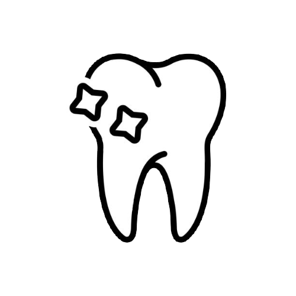
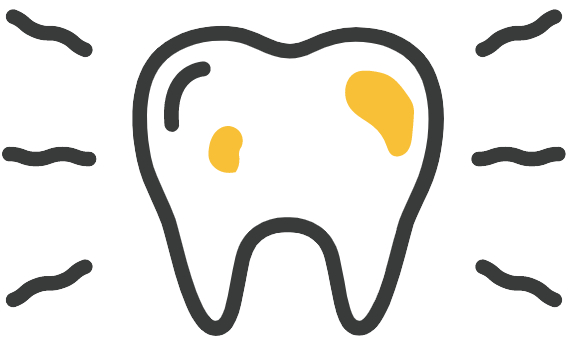
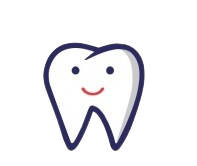

Services We Provide!
General Dentistry
...Proper recording of your chief complain, dental examination, Digital X-ray if necessary to confirm your diagnosis. Special emphasis to record any debilitative conditions which may require medical consultation to ensure minimum post operative complications and maximum comfort. Proper guidance regarding the type of treatment required.
Orthodontics
...Dr Vidyesh Nadkerny provides various orthodontic options to correct your crooked teeth and give you a beautiful smile and a perfect bite. Being a “full time” orthodontist he is able to give you appointments tailored to your convenience and ensure that you are treated with maximum attention and comfort. Braces range from metal, ceramic (tooth colour) and Aligners. Both labial and lingual orthodontic options are available. Orthodontic Options facilitating least accumulation of plaque( deposits) on the teeth and providing ease of maintaining good oral hygiene are available. Various payment options with easy instalment facilities are provided for your convenience. Any breakage, bracket fixing etc is treated immediately without waiting time and discomfort.

Periodontics
...Dr Purnima Nadkerny provides painless periodontal treatment which includes scaling and polishing, periodontal flap surgeries with bone grafts, mucogingival surgeries to cover loss of gum and exposure of roots. LASER assisted surgeries which cause minimal bleeding and discomfort are an available option. Cosmetic Gingival Depigmentation is also carried out. Full mouth disinfection and proper maintenance to prevent recurrence is stressed on.

Restorations( Fillings)
...Any tooth cavity is properly evaluated, cleaned thoroughly and restored. Various tooth fillings are available which are strong and durable which will provide best cosmetic results and allow you to bite on your favourite foods efficiently.

Root canal treatment
...A Root canal treatment is usually required when you have deep caries (decay) in your teeth or a periodontal (gum) infection which causes inflammation or infection in the roots of your tooth. During the root canal treatment the pulp inside the tooth is removed, the root canals are cleaned, shaped, disinfected and then filled to seal the space. The procedure is carried out at our clinic with minimum pain and may require local anaesthesia to make you comfortable. It may be instituted in more than one sitting depending on the infection in your tooth.
Cosmetic Dentistry
...Treatments range from Veneers, Crowns, Bleaching (teeth whitening) , full mouth rehabilitation and smile make over.
Implants
...Replacement of missing teeth with titanium Screws following a surgical procedure. Various options are available. Successful implants are the best option for replacing missing teeth in a healthy patient.
Extraction of teeth
...This is probably the most feared dental procedure by most patients. We institute painless local anaesthesia and carry out the procedure with least trauma. Patients are discharged from the clinic with proper post operative instructions and monitoring to evaluate cessation of post extraction bleeding.

Paediatric Dentistry
...All children are treated with lots of patience and care. We try to instil proper oral hygiene habits in children and educate and counsel parents regarding the maintenance of the same in their children. Restorations, Fluoride treatment, Adverse oral habit correction and interceptive orthodontics is stressed on.
Prosthodontics/crowns and bridges
...Replacement of teeth which have been lost can be efficiently replaced with various treatment options such as removable partial dentures, cast partial dentures, complete dentures. Fixed teeth are a very comfortable and convenient option. Various options such as metal, full ceramic and metal free crowns are available. You can efficiently bite and smile with fixed teeth.